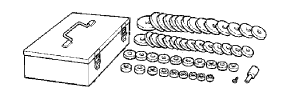
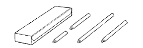
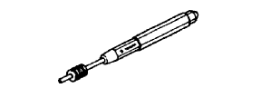

TRANSMISSION CASE OIL SEAL > REPLACEMENT > Preparation

 | 09950-60010 | Replacer Set |
| (09951-00460) | Replacer 46 | |
 | 09950-70010 | Handle Set |
| (09951-07150) | Handle 150 |
| Cylinder gauge | - |
| Dial indicator or dial indicator with magnetic base | - |
| Feeler gauge | - |
| Micrometer | - |
| Plastic hammer | - |
| Press | - |
| Torque wrench | - |
| Vernier calipers | - |
| Item | Capacity | Classification |
| Manual transmission oil | 3.0 liters (3.2 US qts, 2.6 Imp. qts) | API GL-4 or GL-5 SAE 75W-90 |
 | 09010-3C120 | Set, "TORX" Socket Wrench | - |
 | (09013-1C130) | "TORX" Socket Wrench T-type T40 | - |
 | 09013-7C120 | Straight Hexagon 14mm | - |
 | 09051-1C410 | Pin Punch 5 | - |
 | 09082-00040 | TOYOTA Electrical Tester | - |
 | (09083-00150) | Test Lead Set | - |
 | 09905-00012 | Snap Ring No. 1 Expander | - |
| Toyota Genuine Seal Packing 1281, Three Bond 1281 or equivalent | - |
| Toyota Genuine Adhesive 1344, Three Bond 1344 or equivalent | - |